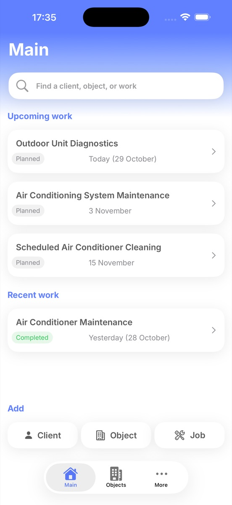
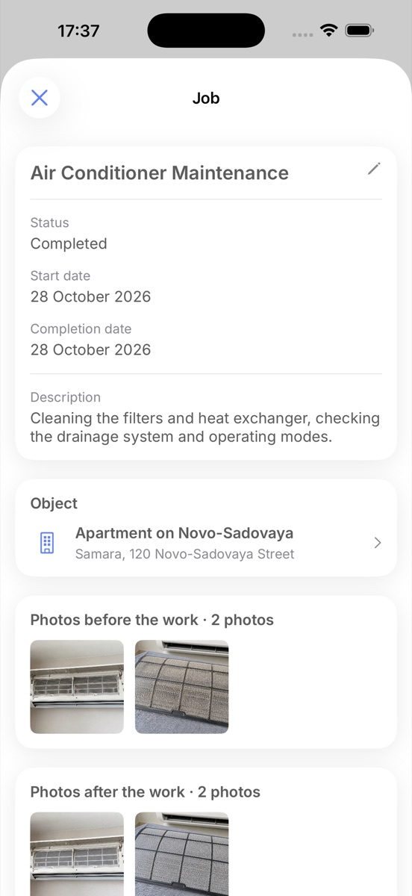
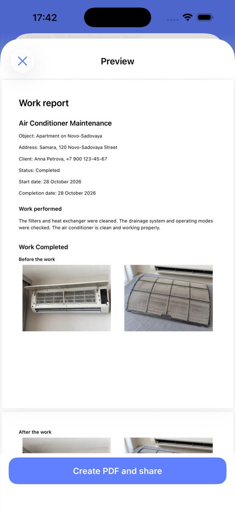

Clients and job sites
Keep contacts, addresses, notes, and the complete work history for every location.
Available on the App Store
ObjectLog helps field technicians organize clients, job sites, and jobs, keep photos, and prepare clear reports for customers.
No registration or subscription. Core data is stored locally on the device.

Everything you need in one place
ObjectLog connects each client, job site, and completed job into one clear history.
Keep contacts, addresses, notes, and the complete work history for every location.
Statuses, dates, and descriptions make upcoming and completed jobs easy to follow.
Photos stay inside the job record together with its description and result.
Combine job details and selected photos into a report you can share with the customer.
The complete history in one place
Open a job site to see its related jobs. Every record keeps its dates, status, description, and result photos together.

A clear result for the customer
Select the relevant photos, add a description, and generate a PDF. Share the finished file through the standard iOS share sheet.

Local-first by design
ObjectLog does not require an account. Clients, job sites, jobs, photos, and reports are stored locally. You decide what to export or share.
ObjectLog is available for iPhone on the App Store.